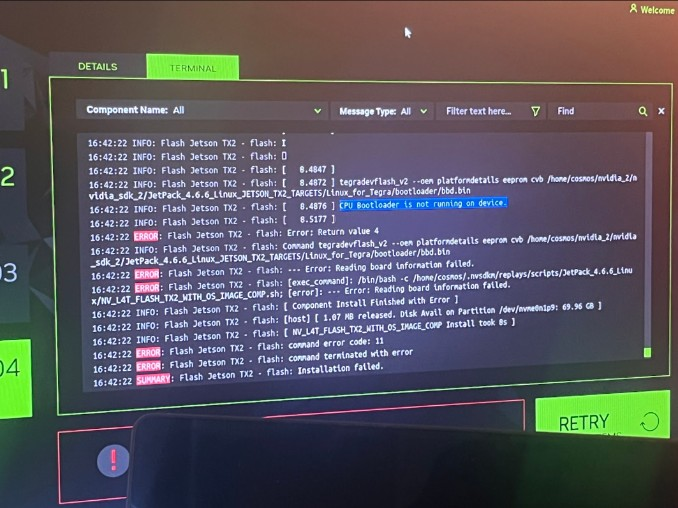

RoboCar
July 2025



What we built
Our cluster got an old RoboRacer car and one goal: bring it back to life and give it a camera for autonomous driving. When the first car couldn't be saved, we moved to a second one and built line following with the camera and LIDAR, then a follower car that holds a set distance behind the car in front.
I worked on the line and car following and tuned the PID distance control, adjusting the P and D terms by trial and error until the follower stopped surging and swerving.
What broke
Almost everything on the first car. The GUI wouldn't boot. We reinstalled Ubuntu 20.04, then learned the Jetson TX2 doesn't support it. A second host PC with 18.04 had the wrong network drivers and no internet. SDK Manager crashed on a UTF-8 decode error until we patched the script with errors='replace'. We finally flashed it by hand from the terminal and the GUI came up, but the flash left the USB ports dead.
On the second car, velocity came out as NaN because the previous and current time variables were never initialized. Then it shut down on every launch. Code looked fine, so we ran it off a wall socket instead of the battery. It was hardware. We tuned the voltage with a potentiometer and it drove.
What I learned
Set a deadline to pivot. We gave the first car until a fixed day, then switched, and that's the only reason we finished. Check compatibility before you install anything. And when the code looks right, test the hardware.
Results
A follower car that tracks the line and holds its distance behind the car ahead, filmed for our final demo. We presented our poster to the program.
Team: Sean Coleman, Elina Fan, Jaden Lee, Brian Yuan.